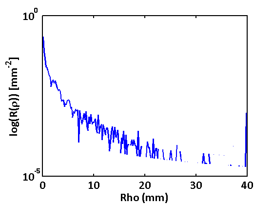
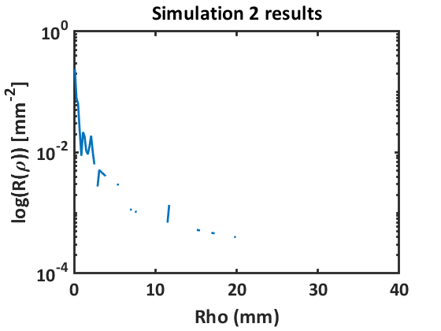
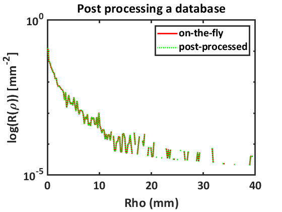
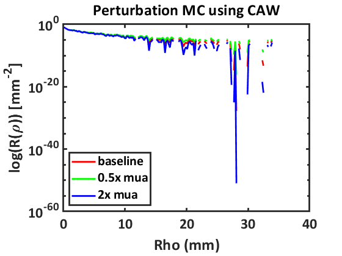
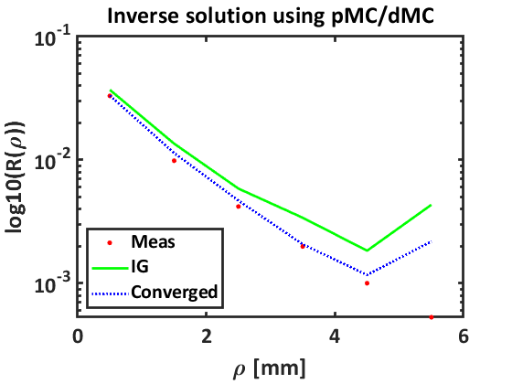
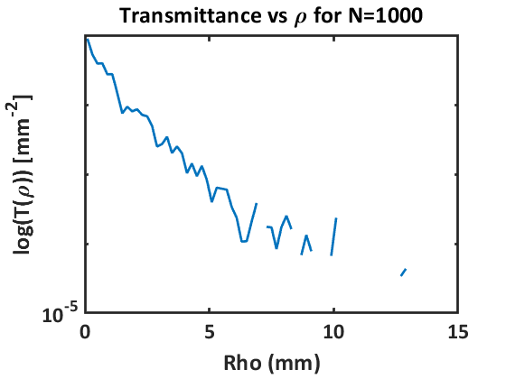
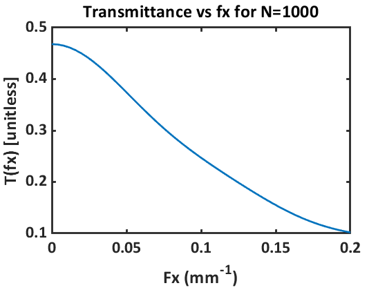
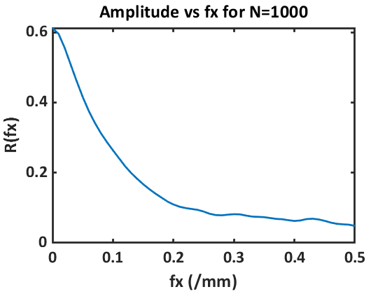

Monte Carlo Demo
Script for demoing use of VTS Monte Carlo tools within Matlab, to view the source code see vts_mc_demo.m
Contents
- Example 1: run a simple Monte Carlo simulation with 1000 photons
- Example 2: run Monte Carlo simulations for two absorption weighting types
- Example 3: run a Monte Carlo simulation with a fully-customized input
- Example 4: run a list of Monte Carlo simulations
- create input to simulation
- create database
- Send optimization function that post-processes database for pMC/dMC results
- Example 9: run a Monte Carlo simulation for transmittance tallies with 1000 photons
- Example 10: run R(fx) detector results
Example 1: run a simple Monte Carlo simulation with 1000 photons
Running simulation... Simulation complete! Run time: 3.4301 seconds

Example 2: run Monte Carlo simulations for two absorption weighting types
with 1000 photons each and compare computation time
Running simulation... Simulation complete! Run time: 0.74001 seconds Running simulation... Simulation complete! Run time: 0.093481 seconds
Example 3: run a Monte Carlo simulation with a fully-customized input
(values used here are the class defaults)
Running simulation... Simulation complete! Run time: 0.32915 seconds
Example 4: run a list of Monte Carlo simulations
create a list of two default SimulationInput with different numbers of photons
Running simulations... Simulations complete! Run time: 3.2041 seconds Running simulation... Simulation complete! Run time: 4.2911 seconds Running post-processor... Post-processing complete! Run time: 0.010162 seconds Running simulation... Simulation complete! Run time: 4.4914 seconds Running post-processor... Post-processing complete! Run time: 0.021185 seconds   
create input to simulation
create database
Running simulation... Simulation complete! Run time: 3.6359 seconds
Send optimization function that post-processes database for pMC/dMC results
specify initial guess equal to baseline value [mua mus] NOTE: mus not mus'
Running post-processor...
Post-processing complete! Run time: 0.019706 seconds
____________________________________________________________
Diagnostic Information
Number of variables: 2
Functions
Objective and gradient: lsqcurvefit/objectiveAndJacobian
Number of lower bound constraints: 0
Number of upper bound constraints: 0
Algorithm selected
trust-region-reflective
____________________________________________________________
End diagnostic information
Running post-processor...
Post-processing complete! Run time: 0.016156 seconds
Running post-processor...
Post-processing complete! Run time: 0.019109 seconds
Local minimum possible.
lsqcurvefit stopped because the size of the current step is less than
the value of the step size tolerance.
Running post-processor...
Post-processing complete! Run time: 0.0085396 seconds
Meas = [0.040000 4.750]
IG = [0.010000 5.000] Chi2=4.898e-05
Conv = [0.030498 4.484] Chi2=5.404e-06
error = [0.237543 0.280]
tissueInput =
MultiLayerTissueInput with properties:
LayerRegions: [1×3 struct]
Running simulation...
Simulation complete! Run time: 0.07578 seconds
unit tests pass
 Example 9: run a Monte Carlo simulation for transmittance tallies with 1000 photons
tissueInput =
MultiLayerTissueInput with properties:
LayerRegions: [1×3 struct]
Running simulation...
Simulation complete! Run time: 0.045001 seconds
  Example 10: run R(fx) detector results
Running simulation... Simulation complete! Run time: 4.1582 seconds